- Módulo: Fundamentos de Hardware
- Título del trabajo Almacenamiento NAS
- Componentes del grupo: Iván José Hernández Regalado
- Curso Académico: 2013/2014
- Fecha de entrega: 1 de Mayo de 2014
Preparación MV
Antes de comenzar con la instalación del FreeNAS creamos una máquina virtual tipo BSD 64 bits con 2 discos duros extras de 2GB cada uno.
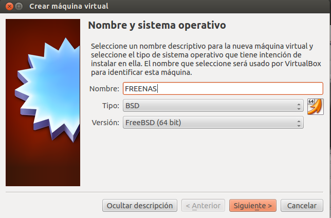
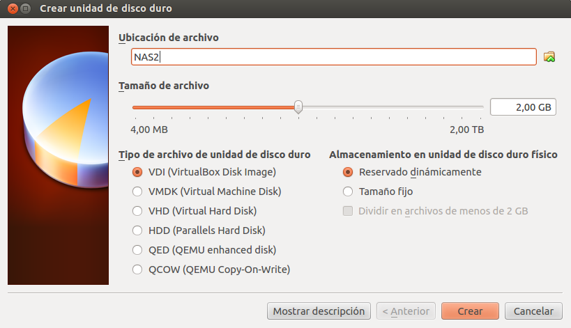
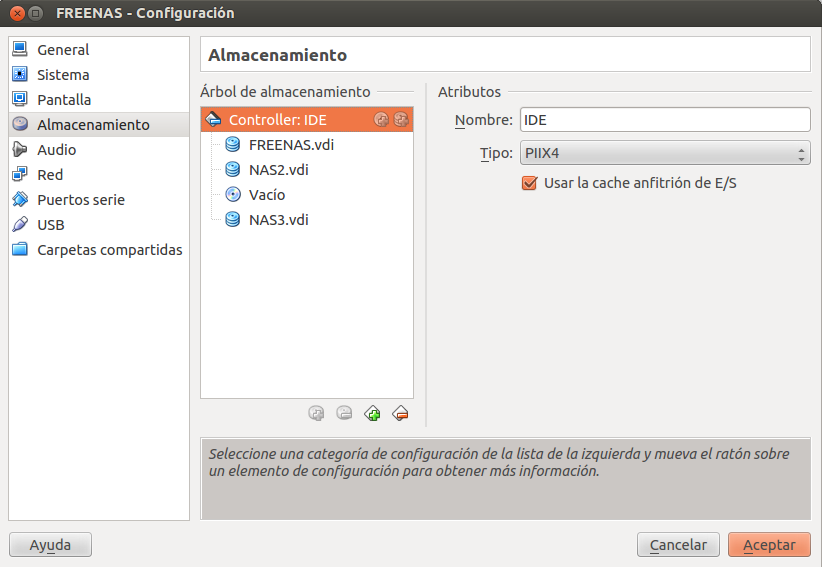
1.1 Instalación
- Tras terminar con la preparación iniciamos la iso para comenzar la instalación y vamos a Install/Upgrade to hard
drive/flash device, etc.
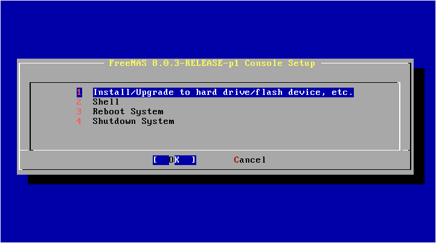
- Luego elegimos el disco donde queremos instalarlo.
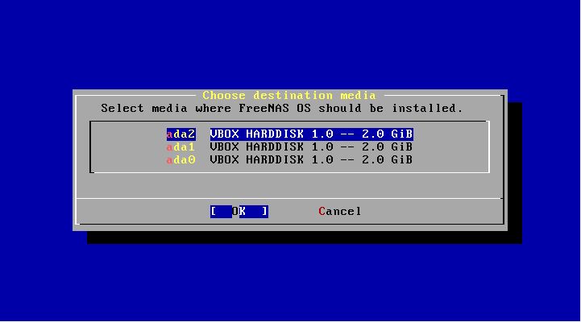
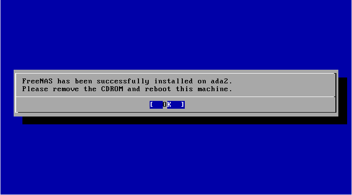
1.2 Configurar FreeNAS
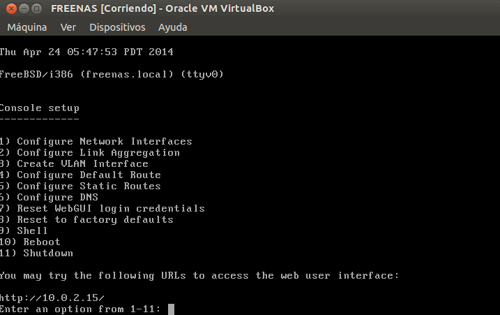
- Empezamos con la opcion 1 y ponemos lo siguiente:
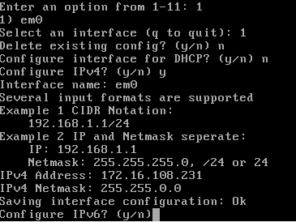
- Luego vamos a la opcion 4 y ponemos lo siguiente:
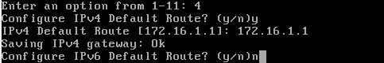
- Seguimos con la opcion 5 y ponemos lo siguiente:
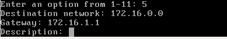
- Terminamos con la opcion 6 y ponemos lo siguiente:
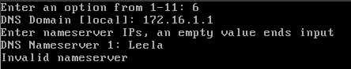
- Ahora miramos si con el ifconfig y mandando un ping está configurado correctamente:
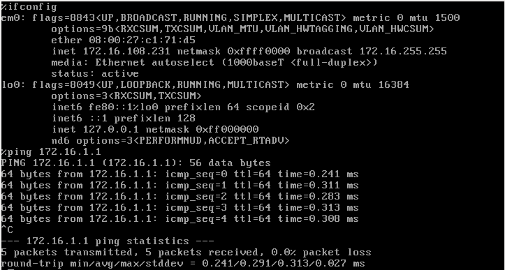
- Para comenzar vamos a crear un volumen a partir de los 2 discos en la pestaña de storage. Le ponemos el nombre que queramos y tiene que ser
de tipo mirror y que se monte en /mnt/datos1.
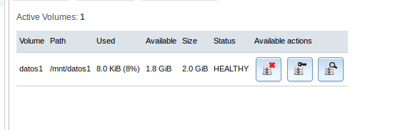
- Luego vamos a services y activamos el CIFS.
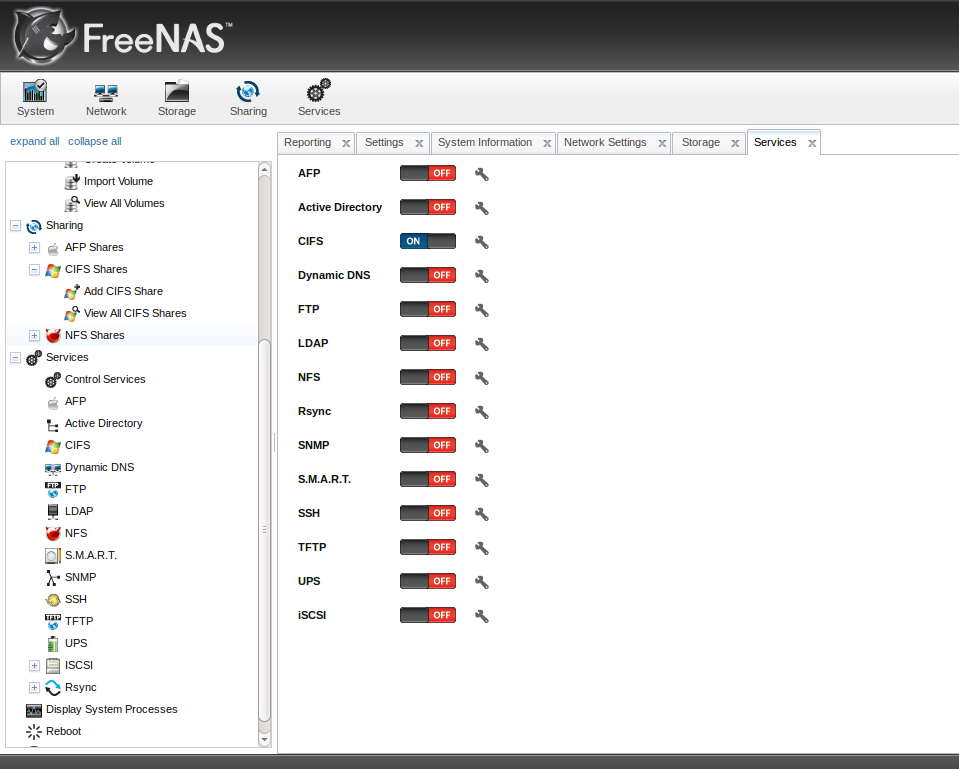
- Añadimos la carpeta y su nombre por último.
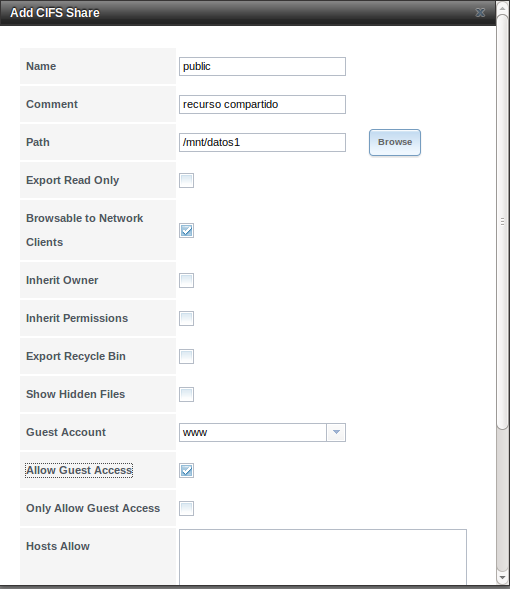
- Para que podamos escribir en la carpeta compartida debemos desde la máquina FreeNAS e ir a la carpeta y crear una carpeta con
permisos 777.
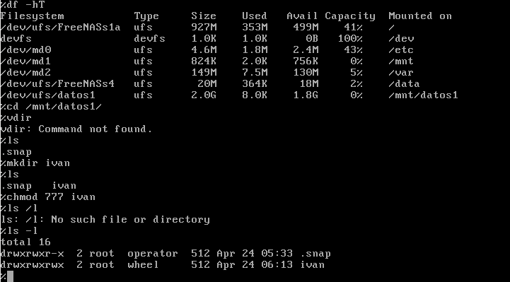
- Comprobar que podemos añadir carpetas y no nos da errores.
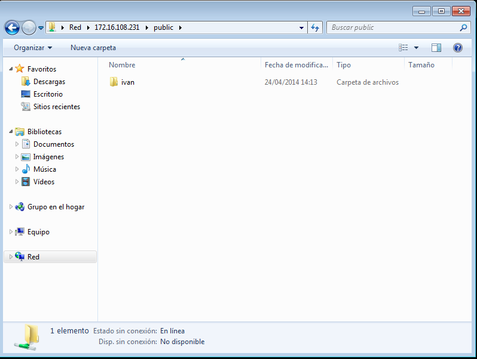
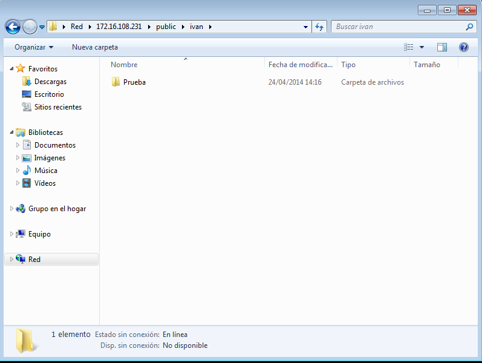